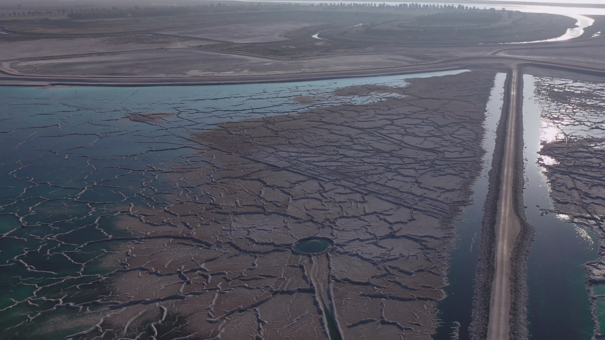
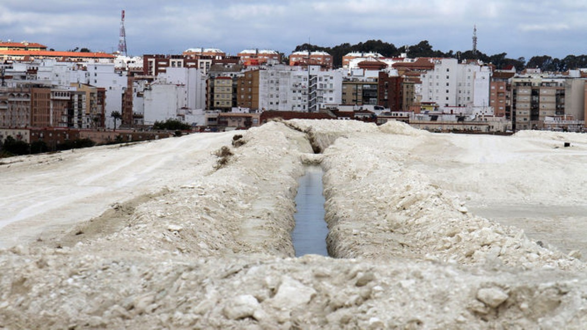

fosfoyesos.info
Showing data to solve phosphogypsum problem in Huelva, Spain. 100%
legal.
Environmental concerns
Visual impact
Sky view of the phosphogypsum area in Huelva city
Image
courtesy of La Mar de Onuba, licensed under
CC BY-SA 4.0

Acid water view of the phosphogypsum area
Image
courtesy of La Mar de Onuba, licensed under
CC BY-SA 4.0

Walking through phosphogypsum
Image
courtesy of La Mar de Onuba, licensed under
CC BY-SA 4.0
Terrain impact
Radiation
Acidity
Flora impact
Health concerns
Curious facts
References
Acknowledgements
Contact